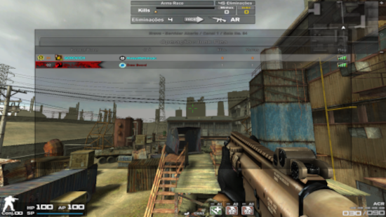
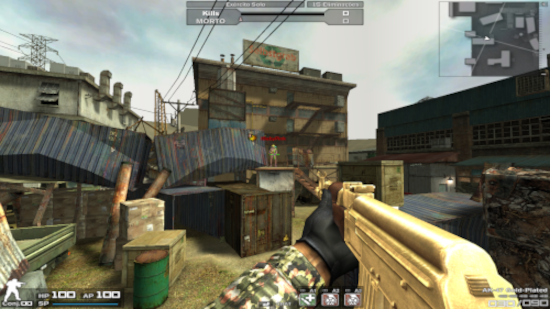
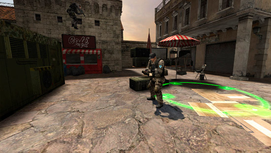

Modos mais jogados por mim

Arms Race um modo no jogo Combat Arms que consiste no seguinte: São 16 jogadores, todo mundo contra, mas existe uma particularidade: A cada 3 mortes de adversários, sua arma muda de categoria até você ou outro jogador completar 45 mortes.

Exército Solo é um modo onde 16 jogadores jogam contra, com qualquer armamento (Exceto quando o Elite da sala restringir algum tipo de armamento.) O primeiro que fizer 45 mortes ganha a sala. Clique aqui

Buscar & Destruir é um modo onde um time é responsável por plantar uma bomba e o outro é responsável por defusá-la no tempo permitido. Se caso o time com a bomba não plantá-la, terá que matar todos os adversários.